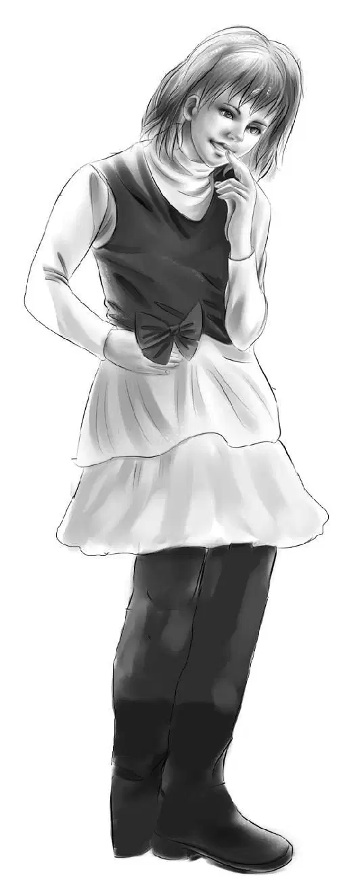
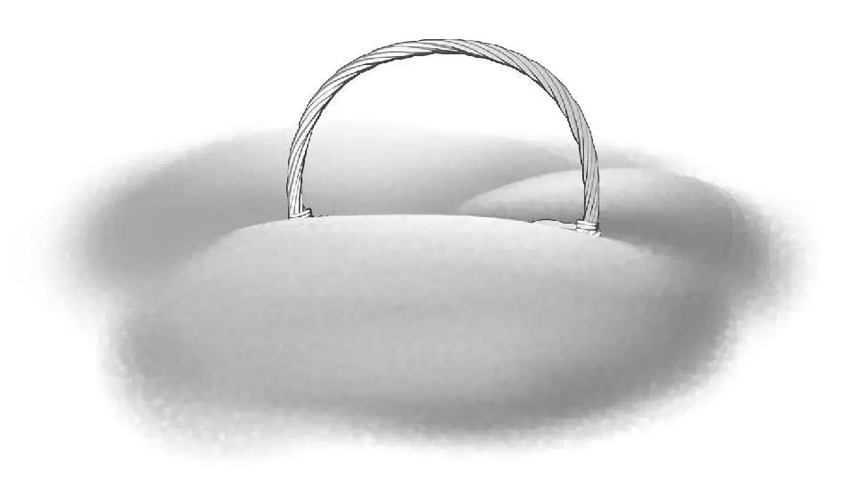
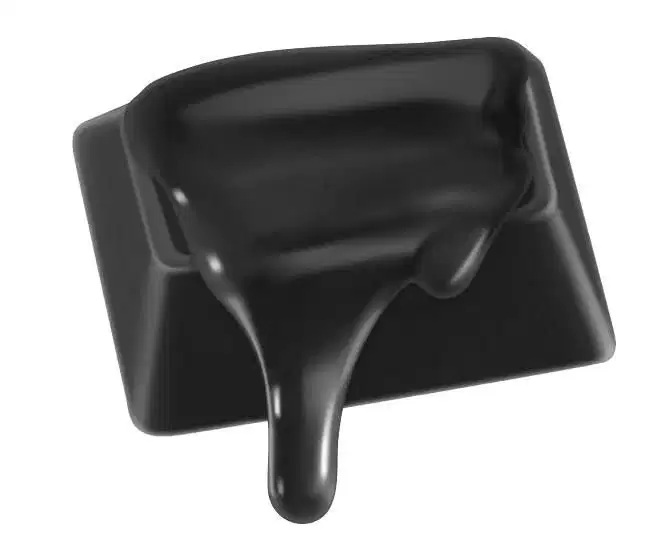
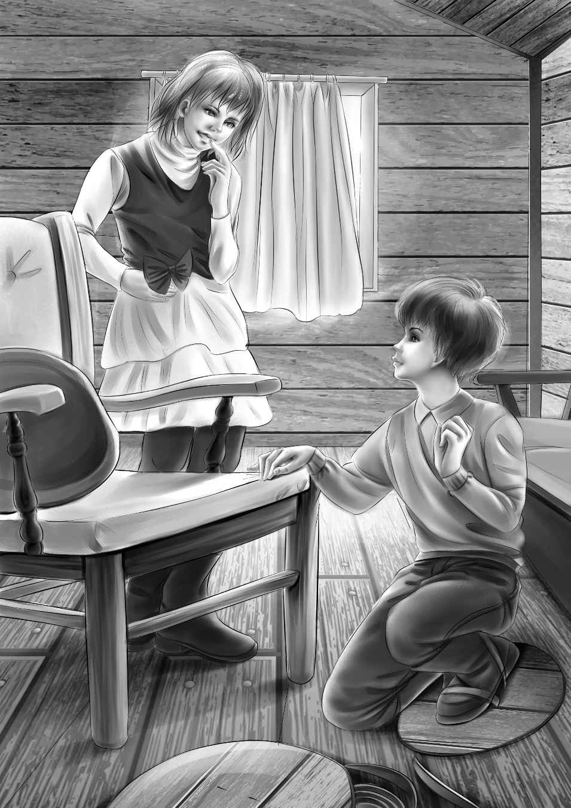
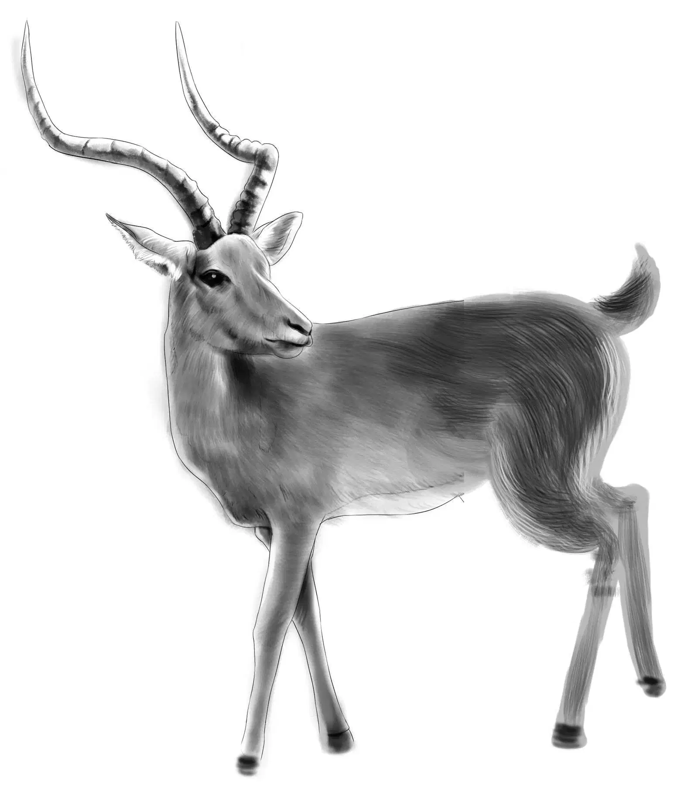

Making Do

晚上孩子们上床的时候，大雪仍然下个不停，天气越发凛冽，刺骨的寒风也刮了起来。
“简直算得上暴风雪了。”亨利说，“这种景况，我还从来没见过呢！”
的确，在这样的时节，如此情形还从未在这片地区出现过。寒风呼啸狂吼着，对孩子们来说，松鼠发出的噪音已经算不得什么，不知不觉间，他们竟然酣然入睡了。
第二天一早醒来时，孩子们几乎看不到屋外的景象——雪积得很深，已经挡住了小半个窗口。
“可怜的爷爷。”维莉边说边尽力朝窗外看了看，“他肯定在担心咱们呢。”她爬上窗椅，放眼朝外面望去。“亨利！”她叫了起来，“你绝对不敢相信，雪都埋到鸟食那里了，连提篮也被埋进去了！”

班尼、杰西和亨利赶紧爬上去看，果然只看到了篮子的提手。
“我的收音机！”班尼猛地叫道，差点从窗椅上摔下来，“我要调到绿野镇电台，听听新闻，说不定会有关于这场暴雪的特讯呢！”
杰西开始着手准备早餐了，亨利穿上了最暖和的衣服，但他没说要去做什么。
“听啊，新闻开始啦！”班尼说。
收音机里传来了播音员的声音：“鉴于暴风雪原因，下面我们将为各位听众播送特别消息，请仔细收听。阿兰·莫尔先生想对家人说，他很安全，但今天无法回家了。警长呼吁广大民众保持冷静，街道上的积雪会尽快得到清扫。消防部门提醒各位居民，取暖时要谨防火炉太热引起火灾。詹姆斯·奥登先生想告诉孙子孙女，他们必须待在猎人小屋里，他会尽快派人过去帮忙。”
“果然是爷爷的风格！”班尼说道。
“可不是么！”杰西说道，听到爷爷的消息后，她安心多了，“早餐我会多做些热巧克力，咱们要吃得热乎乎的。”
可当她拧开龙头时，发现竟然没有水流出来。
“没水了，亨利！”杰西叫了起来。
“一定是水管冻住了。”亨利说。
“不要紧，没什么大不了！”杰西说着，脸上露出了微笑。
“你想到什么主意了，杰西？”班尼问道。
“没水也能做热巧克力，将雪融化就行。”
亨利把门敞开一条缝，伸出那口大大的平底锅去舀雪。“多舀一点儿，亨利。”杰西说道，“反正很快就会煮化的。”
她把锅放在炉子上，一大锅松软的白雪越融越少，不一会，水就煮沸了。
“我还要加点牛奶到热巧克力里去。”杰西说。

一家人美美地吃起了早餐，热腾腾的巧克力让大家全身上下都暖和了起来。
而直到这时，大伙儿才明白亨利为什么要穿得那么厚，只听亨利说道：“班尼，我要出去，看能不能把昨晚的积雪再铲一次，还有小鸟的食篮被雪埋住了，也需要清理清理，你要不要跟我一起？”
“当然要，”班尼一口答应，“等我穿上外套。”
积雪已经深及班尼的腰部。两个男孩围着小木屋铲出一条窄窄的小道，铲出的雪依然堆在一边。风雪不时迷住他们的眼睛。
小屋里，女孩们听到轮番铲雪的声音，维莉实在坐不住了，站起来说：“咱们也穿好衣服出去吧。”
“快看窗户！”杰西说道。
只见挡住玻璃的雪明显少了许多，女孩们可以看到两把铲子正在上下翻飞，将窗户上的积雪铲走。
“太好了，终于又可以看到外面了。”杰西点了点头，“那两个小伙子还真能干哪！”
很快，大家便能隔窗对望了，屋里的女孩和屋外的男孩相互挥挥手，开心地笑了起来。
进屋吃午饭时，两个男孩已经累得精疲力尽，不过亨利仍在说：“吃完饭我还要出去捡点柴火，你要不要一起去，小班班？”
“那还用问？当然要！”班尼答道，“只是这次我要穿上雪地靴，我可不想陷进雪里，雪实在是太深了！”
“那你用什么来作雪地靴呢？”杰西问道。
“橱架上不是有两个很大的锅盖吗？反正它们和屋子里的锅都不配套。”
“想来小木屋里很久以前应该是有两口大锅的吧？”杰西说，“虽然我也不知道它们是用来干什么的。”
“也许是用来煮鹿肉的。”班尼说，“反正咱们又不吃那玩意儿。”他急不可待地要着手制作自己的雪地靴了。
“你怎么才能让锅盖固定在脚上呢，班尼？”维莉问道。
“嗯……我会用两根带子绑住它，”班尼说，“不过先得在锅盖上各穿两个洞。”
班尼抽出折叠小刀里最宽的那把，接着用尼尔森家的锤子用力敲打了几下，锅盖上便出现了两个小口子。此时，就连亨利也忍不住凑过来看，只见班尼在每个口子上穿了根带子，将两只靴子分别放在锅盖上，用带子固定住后，再如同系鞋带一样系好。

“很不错呢，班尼！”亨利说道，“走几步看看。”
班尼哐啷哐啷地走了起来，只是那动静大的，简直是震耳欲聋！
“这比松鼠发出的噪音还难听呢。”班尼说，“不过没关系，在厚厚的雪地上走就不会有任何声响了。”
杰西帮班尼穿好了毛衣和外套，又戴上厚厚的手套。班尼拿起一把铁锹作滑雪杆，亨利则带上了斧子。出发之前，两人又把台阶上的积雪清扫了一遍。纷纷扬扬的雪花在寒风中不住地打着旋儿。
“雪地靴还真管用，维莉。”杰西望着两个男孩的背影，只见班尼在雪地上走得轻松自如，亨利则在齐腰深的雪地里艰难跋涉，“希望他们不要迷路。”
“不会的。”维莉说，“他们又不会走散。”
“那么现在，看看咱们能不能给这两个小伙子准备点惊喜？”杰西思索着，说道，“我在想，爷爷说‘会派人过来帮忙’是什么意思，指的是今天还是明天呢？”
“我想他的意思是，让咱们尽管放心地把所有屯的食物吃完——但愿我没有理解错。”
“我也是这样理解的。”杰西说，“既然我们中午吃的是三明治，那么晚上就来一顿丰盛的炖鸡肉大餐，给俩帅哥一个惊喜，怎么样？反正咱们有一整只罐装鸡，炖的时候还可以加罐意大利面进去。就算水龙头里没水，也不愁没热水啊，对不？”
就这样，两个女孩开始准备大餐了：她们先给鸡肉去骨，和意大利面一起放进炖锅，又将热水倒进去。“我又想到了一个惊喜！”维莉兴奋地叫了起来，“我们可以用雪做冰激凌啊！”
“好主意！”杰西说，“反正雪多得是，想做什么都行。只是，我忘记该怎么做冰激凌了，好像得用上一点儿牛奶，加糖进去融化，再加香草——等等，咱们没有香草。”
两个女孩不由得绞尽脑汁地思索起来，片刻后，杰西猛地叫道：“咱们可以把葡萄干果冻融化掉，制作葡萄干口味的冰激凌，应该丝毫不比香草口味的差吧！”
“而且做出来的冰激凌还是粉粉的！”维莉补充道。
说话间，杰西便把牛奶、果冻和砂糖混在了一起：“等到吃甜点的时候再把雪放进去好了！看，男孩们回来了。”
果然，班尼和亨利各自抱着几捆柴火向木屋走来。“看起来柴火全都是亨利砍的，”维莉笑着说，“它们的长短都一样呢！”
班尼穿着雪地靴，走在前面，相比之下，亨利则慢得多，因为每走一步都必须把脚高高抬起。
“我们马上还要折回去！”班尼叫道，“还有些树枝没捡，搁在那儿呢！等我一会儿，我先得把围巾当裤带系上！”
“我也这么认为。”杰西尽量忍住没笑出声来，“要帮忙么？”
“要，一条围巾怕是不够长呢！”
“足够了，”杰西说，“你觉得肚子被勒得很紧吗？”
“才不紧呢。看这些柴火怎么样，不错吧？又枯又干，都是亨利挑选的。”
“好极了！”两个女孩齐声赞道。
男孩们正准备动身去取剩余的木柴，这时，望望突然叫了起来。
“不行，望望，你不准去。”班尼叫道，“你会陷进雪地里的。”
可是望望的叫声却越来越响，越来越激动。
“估计它是冲着松鼠叫唤呢！”杰西说。
“不对，杰西。”维莉说，“你听！”

屋外响起一阵怪异而低沉的叫声，两个女孩打开门，向白雪覆盖的小路望去。两个男孩也准备出发了。
“哟！”杰西惊呼起来，“是咱们在树林里见过的那两头鹿！”
两个男孩停住脚步，看向两头鹿，只见它们被半埋在雪中，挣扎着想站起来，但又摔倒，如此不断重复着。
两个男孩转过身，悄悄地回到小木屋。
亨利低声说道：“别吓着它们！小鹿估摸着是来觅食的，它们以为有人的地方就会有食物。”